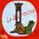

|
 | Bevezetésként: számos botrány tör ki a cigánygyerekek iskoláztatása
miatt. Az esetek jelentős részében szegregációs ügyekről van szó: külön
osztályokba teszik a purdékat, avagy egyes falvakban összeroskad az
iskola, mert a magyar gyerekeket a szülők inkább máshová viszik, ha
tehetik.
Az
efféle esetekről szóló tévériportokban az a közös, hogy mindig szót kap
a kisebbségi önkormányzat, továbbá rendre művelt, érvelni alapfokon már
képes, és a diszkriminációt lánglelkűen ostorozó liberális politikusok
is hosszú ideig fényezhetik magukat. Ugyanakkor a gaz diszkrimináló
magyar szülőket nemigen szólaltatják meg: vagy ha mégis, ügyesen
választanak egy egyszerű személyiségszerkezetű alakot, aki esetleg
kissé ittas is, és technikás kérdésekkel kihúznak gyorsan némi
cigányozást belőle. Utána jön a kórus, aki leugatja: aki pedig nézi a
riportot, maga is szemét rasszistának érzi magát, és szinte rohanna
beíratni a gyerekét a cigányok közé.
Kijózanítás céljából - és
azért, hogy a demokratikus jogegyenlőség saját értelmezését
megvilágítsam - most csak kérdezni fogok. Tessék válaszolni!
1.
Joga van-e a magyar gyereknek ahhoz, hogy képességei, szülei elvárása
és zsenge korában megszerzett alapismeretei, kultúrája maximális
felhasználásával normál ütemben tanulhassa az általános iskolai
anyagot, és a tanító éppen annyit foglalkozzon vele, mint a többi
diákkal?
2. Joga van-e a magyar gyereknek ahhoz, hogy az
iskolában biztonságban legyen, osztálytársai hasonló korúak (és testi
erejűek) legyenek?
3. Joga van-e a magyar gyereknek a saját, szülei által becsomagolt uzsonnájához?
4. Joga van-e a magyar gyereknek ahhoz, hogy ha egy másik diák megveri vagy gyötri, a tanító hatékony eszközökkel megvédje?
5.
Joga van-e a magyar gyereknek ahhoz, hogy kicsit nagyobb korában
mobilját ne vehesse el egyik társa sem, és zsebpénzéből ne kelljen
verések elkerülésére költenie afféle modern adósrabszolgaként?
6.
Joga van-e a magyar gyereknek ahhoz, hogy diáktársai kábítószeres
élményeinek propagálását, illeve a kábítószer terjesztését hatékonyan
megakadályozzák?
7. Joga van-e a pedagógusnak, hogy hatékonyan
fenyíthesse meg azokat a diákokat, akik a többieket mindenben
hátráltatják, és az erőszaktól sem riadnak vissza?
8. Joga van-e
a pedagógusnak önvédelmi fegyver viselésére a szülői értekezleten,
illetve hatékony önvédelemre, ha a szülő megtámadja?
9. Mennyire
hatékony az intő, az egyes érdemjegy vagy a buktatás olyan diákok
fegyelmezésére, akinek a szülei szükségtelen rossznak tartják az
iskolát, és csak azért járatják oda a diákot, hogy a családi pótlékot
meg ne vonják, illetve a gyermekjóléti szolgálat nehogy eljárást
kezdjen ellenük?
10. Milyen módon lehetne a vegyes iskolákban
olyan fegyelmet teremteni, ami a tanulni vágyó gyerekeknek is
biztosítja, hogy ne súlyos lemaradással kelljen a középiskolával
próbálkozniuk?
A kérdésekre a választ "Rohadt fasiszta-rasszista szemét, hogy kérdezhetsz egyáltalán ilyeneket!" jeligére helyben várjuk...
| | vissza a főoldalra |  |
| 1 2 3 4 5 6 7 8 9 10 11 12 13 14 15 16 17 | |  | | | | | | 

|
| | | | | | | | | | | | | | | | 1 2 3 4 5 6 7 8 9 10 11 12 13 14 15 16 17 |  |
|


túraszervező
túra-rss
mi ez?

legjobbak
legolvasottabbak
tartalomjegyzék
rss feed

AboryM
Caesar
Count Grishnackh
cscsabi
eürdüngh
Feki
GyalogKakukk
Ishukone
Kadzseszka
LACI1993
Mini
Muska
Rommel
Segi
Takezó
tommylee
vikcee
|
BlogGép 1.1 (C) 2007-2009 tomcat
nem adom
hülye kérdések elott olvasd el a faq-t
minden, a bombagyar.hu-n és aloldalain közölt tartalom újraközléséhez
a szerkesztõk írásos beleegyezése szükséges
az olvasói kommentárok és levelek nem feltétlenül a szerkesztõk véleményét tükrözik
házirend elolvasása